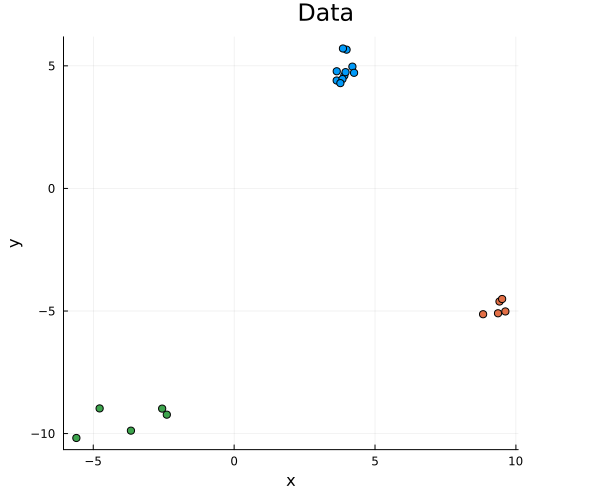
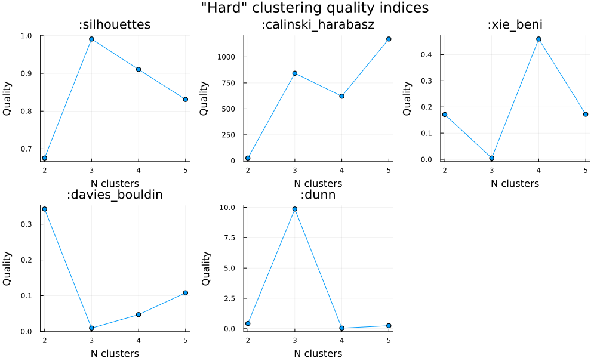

Evaluation & Validation
Clustering.jl package provides a number of methods to compare different clusterings, evaluate clustering quality or validate its correctness.
Clustering comparison
Methods to compare two clusterings and measure their similarity.
Cross tabulation
Cross tabulation, or contingency matrix, is a basis for many clustering quality measures. It shows how similar are the two clusterings on a cluster level.
Clustering.jl extends StatsBase.counts() with methods that accept ClusteringResult arguments:
StatsBase.counts — Methodcounts(a::ClusteringResult, b::ClusteringResult) -> Matrix{Int}
counts(a::ClusteringResult, b::AbstractVector{<:Integer}) -> Matrix{Int}
counts(a::AbstractVector{<:Integer}, b::ClusteringResult) -> Matrix{Int}Calculate the cross tabulation (aka contingency matrix) for the two clusterings of the same data points.
Returns the $n_a × n_b$ matrix C, where $n_a$ and $n_b$ are the numbers of clusters in a and b, respectively, and C[i, j] is the size of the intersection of i-th cluster from a and j-th cluster from b.
The clusterings could be specified either as ClusteringResult instances or as vectors of data point assignments.
See also
confusion(a::ClusteringResult, a::ClusteringResult) for 2×2 confusion matrix.
Confusion matrix
Confusion matrix for the two clusterings is a 2×2 contingency table that counts how frequently the pair of data points are in the same or different clusters.
Clustering.confusion — Functionconfusion([T = Int],
a::Union{ClusteringResult, AbstractVector},
b::Union{ClusteringResult, AbstractVector}) -> Matrix{T}Calculate the confusion matrix of the two clusterings.
Returns the 2×2 confusion matrix C of type T (Int by default) that represents partition co-occurrence or similarity matrix between two clusterings a and b by considering all pairs of samples and counting pairs that are assigned into the same or into different clusters.
Considering a pair of samples that is in the same group as a positive pair, and a pair is in the different group as a negative pair, then the count of true positives is C₁₁, false negatives is C₁₂, false positives C₂₁, and true negatives is C₂₂:
| Positive | Negative | |
|---|---|---|
| Positive | C₁₁ | C₁₂ |
| Negative | C₂₁ | C₂₂ |
See also
counts(a::ClusteringResult, a::ClusteringResult) for full contingency matrix.
Rand index
Rand index is a measure of the similarity between the two data clusterings. From a mathematical standpoint, Rand index is related to the prediction accuracy, but is applicable even when the original class labels are not used.
Clustering.randindex — Functionrandindex(a, b) -> NTuple{4, Float64}Compute the tuple of Rand-related indices between the clusterings c1 and c2.
a and b can be either ClusteringResult instances or assignments vectors (AbstractVector{<:Integer}).
Returns a tuple of indices:
- Hubert & Arabie Adjusted Rand index
- Rand index (agreement probability)
- Mirkin's index (disagreement probability)
- Hubert's index ($P(\mathrm{agree}) - P(\mathrm{disagree})$)
References
Lawrence Hubert and Phipps Arabie (1985). Comparing partitions. Journal of Classification 2 (1): 193-218
Meila, Marina (2003). Comparing Clusterings by the Variation of Information. Learning Theory and Kernel Machines: 173-187.
Steinley, Douglas (2004). Properties of the Hubert-Arabie Adjusted Rand Index. Psychological Methods, Vol. 9, No. 3: 386-396
Variation of Information
Variation of information (also known as shared information distance) is a measure of the distance between the two clusterings. It is devised from the mutual information, but it is a true metric, i.e. it is symmetric and satisfies the triangle inequality.
Clustering.varinfo — Functionvarinfo(a, b) -> Float64Compute the variation of information between the two clusterings of the same data points.
a and b can be either ClusteringResult instances or assignments vectors (AbstractVector{<:Integer}).
References
Meila, Marina (2003). Comparing Clusterings by the Variation of Information. Learning Theory and Kernel Machines: 173–187.
V-measure
V-measure can be used to compare the clustering results with the existing class labels of data points or with the alternative clustering. It is defined as the harmonic mean of homogeneity ($h$) and completeness ($c$) of the clustering:
\[V_{\beta} = (1+\beta)\frac{h \cdot c}{\beta \cdot h + c}.\]
Both $h$ and $c$ can be expressed in terms of the mutual information and entropy measures from the information theory. Homogeneity ($h$) is maximized when each cluster contains elements of as few different classes as possible. Completeness ($c$) aims to put all elements of each class in single clusters. The $\beta$ parameter ($\beta > 0$) could used to control the weights of $h$ and $c$ in the final measure. If $\beta > 1$, completeness has more weight, and when $\beta < 1$ it's homogeneity.
Clustering.vmeasure — Functionvmeasure(a, b; [β = 1.0]) -> Float64V-measure between the two clusterings.
a and b can be either ClusteringResult instances or assignments vectors (AbstractVector{<:Integer}).
The β parameter defines trade-off between homogeneity and completeness:
- if $β > 1$, completeness is weighted more strongly,
- if $β < 1$, homogeneity is weighted more strongly.
References
Andrew Rosenberg and Julia Hirschberg, 2007. V-Measure: A conditional entropy-based external cluster evaluation measure
Mutual information
Mutual information quantifies the "amount of information" obtained about one random variable through observing the other random variable. It is used in determining the similarity of two different clusterings of a dataset.
Clustering.mutualinfo — Functionmutualinfo(a, b; normed=true) -> Float64Compute the mutual information between the two clusterings of the same data points.
a and b can be either ClusteringResult instances or assignments vectors (AbstractVector{<:Integer}).
If normed parameter is true the return value is the normalized mutual information (symmetric uncertainty), see "Data Mining Practical Machine Tools and Techniques", Witten & Frank 2005.
References
Vinh, Epps, and Bailey, (2009). Information theoretic measures for clusterings comparison. Proceedings of the 26th Annual International Conference on Machine Learning - ICML ‘09.
Clustering quality indices
clustering_quality() methods allow computing intrinsic clustering quality indices, i.e. the metrics that depend only on the clustering itself and do not use the external knowledge. These metrics can be used to compare different clustering algorithms or choose the optimal number of clusters.
| quality index | quality_index option | clustering type | better quality | cluster centers |
|---|---|---|---|---|
| Calinski-Harabasz | :calinsky_harabasz | hard/fuzzy | higher values | required |
| Xie-Beni | :xie_beni | hard/fuzzy | lower values | required |
| Davis-Bouldin | :davis_bouldin | hard | lower values | required |
| Dunn | :dunn | hard | higher values | not required |
| silhouettes | :silhouettes | hard | higher values | not required |
Clustering.clustering_quality — FunctionFor "hard" clustering:
clustering_quality(data, centers, assignments; quality_index, [metric])
clustering_quality(data, clustering; quality_index, [metric])For fuzzy ("soft") clustering:
clustering_quality(data, centers, weights; quality_index, fuzziness, [metric])
clustering_quality(data, clustering; quality_index, fuzziness, [metric])For "hard" clustering without specifying cluster centers:
clustering_quality(data, assignments; quality_index, [metric])
clustering_quality(data, clustering; quality_index, [metric])For "hard" clustering without specifying data points and cluster centers:
clustering_quality(assignments, dist_matrix; quality_index)
clustering_quality(clustering, dist_matrix; quality_index)Compute the quality index for a given clustering.
Returns a quality index (real value).
Arguments
data::AbstractMatrix: $d×n$ data matrix with each column representing one $d$-dimensional data pointcenters::AbstractMatrix: $d×k$ matrix with cluster centers represented as columnsassignments::AbstractVector{Int}: $n$ vector of point assignments (cluster indices)weights::AbstractMatrix: $n×k$ matrix with fuzzy clustering weights,weights[i,j]is the degree of membership of $i$-th data point to $j$-th clusterclustering::Union{ClusteringResult, FuzzyCMeansResult}: the output of the clustering methodquality_index::Symbol: quality index to calculate; see below for the supported optionsdist_matrix::AbstractMatrix: a $n×n$ pairwise distance matrix;dist_matrix[i,j]is the distance between $i$-th and $j$-th points
Keyword arguments
quality_index::Symbol: clustering quality index to calculate; see below for the supported optionsfuzziness::Real: clustering fuzziness > 1metric::SemiMetric=SqEuclidean():SemiMetricobject that defines the metric/distance/similarity function
When calling clustering_quality, one can explicitly specify centers, assignments, and weights, or provide ClusteringResult via clustering, from which the necessary data will be read automatically.
For clustering without known cluster centers the data points are not required. dist_matrix could be provided explicitly, otherwise it would be calculated from the data points using the specified metric.
Supported quality indices
:calinski_harabasz: hard or fuzzy Calinski-Harabsz index (↑), the corrected ratio of between cluster centers inertia and within-clusters inertia:xie_beni: hard or fuzzy Xie-Beni index (↓), the ratio betwen inertia within clusters and minimal distance between the cluster centers:davies_bouldin: Davies-Bouldin index (↓), the similarity between the cluster and the other most similar one, averaged over all clusters:dunn: Dunn index (↑), the ratio of the minimal distance between clusters and the maximal cluster diameter:silhouettes: the average silhouette index (↑), seesilhouettes
The arrows ↑ or ↓ specify the direction of the incresing clustering quality. Please refer to the documentation for more details on the clustering quality indices.
The clustering quality index definitions use the following notation:
- $x_1, x_2, \ldots, x_n$: data points,
- $C_1, C_2, \ldots, C_k$: clusters,
- $c_j$ and $c$: cluster centers and global dataset center,
- $d$: a similarity (distance) function,
- $w_{ij}$: weights measuring membership of a point $x_i$ to a cluster $C_j$,
- $\alpha$: a fuzziness parameter.
Calinski-Harabasz index
Calinski-Harabasz index (option :calinski_harabasz) measures corrected ratio between global inertia of the cluster centers and the summed internal inertias of clusters:
\[\frac{n-k}{k-1}\frac{\sum_{C_j}|C_j|d(c_j,c)}{\sum\limits_{C_j}\sum\limits_{x_i\in C_j} d(x_i,c_j)} \quad \text{and}\quad \frac{n-k}{k-1} \frac{\sum\limits_{C_j}\left(\sum\limits_{x_i}w_{ij}^\alpha\right) d(c_j,c)}{\sum_{C_j} \sum_{x_i} w_{ij}^\alpha d(x_i,c_j)}\]
for hard and fuzzy (soft) clusterings, respectively. Higher values indicate better quality.
Xie-Beni index
Xie-Beni index (option :xie_beni) measures ratio between summed inertia of clusters and the minimum distance between cluster centres:
\[\frac{\sum_{C_j}\sum_{x_i\in C_j}d(x_i,c_j)}{n\min\limits_{c_{j_1}\neq c_{j_2}} d(c_{j_1},c_{j_2}) } \quad \text{and}\quad \frac{\sum_{C_j}\sum_{x_i} w_{ij}^\alpha d(x_i,c_j)}{n\min\limits_{c_{j_1}\neq c_{j_2}} d(c_{j_1},c_{j_2}) }\]
for hard and fuzzy (soft) clusterings, respectively. Lower values indicate better quality.
Davis-Bouldin index
Davis-Bouldin index (option :davis_bouldin) measures average cohesion based on the cluster diameters and distances between cluster centers:
\[\frac{1}{k}\sum_{C_{j_1}}\max_{c_{j_2}\neq c_{j_1}}\frac{S(C_{j_1})+S(C_{j_2})}{d(c_{j_1},c_{j_2})}\]
where
\[S(C_j) = \frac{1}{|C_j|}\sum_{x_i\in C_j}d(x_i,c_j).\]
Lower values indicate better quality.
Dunn index
Dunn index (option :dunn) measures the ratio between the nearest neighbour distance divided by the maximum cluster diameter:
\[\frac{\min\limits_{ C_{j_1}\neq C_{j_2}} \mathrm{dist}(C_{j_1},C_{j_2})}{\max\limits_{C_j}\mathrm{diam}(C_j)}\]
where
\[\mathrm{dist}(C_{j_1},C_{j_2}) = \min\limits_{x_{i_1}\in C_{j_1},x_{i_2}\in C_{j_2}} d(x_{i_1},x_{i_2}),\quad \mathrm{diam}(C_j) = \max\limits_{x_{i_1},x_{i_2}\in C_j} d(x_{i_1},x_{i_2}).\]
It is more computationally demanding quality index, which can be used when the centres are not known. Higher values indicate better quality.
Silhouettes
Silhouettes metric quantifies the correctness of point-to-cluster asssignment by comparing the distance of the point to its cluster and to the other clusters.
The Silhouette value for the $i$-th data point is:
\[s_i = \frac{b_i - a_i}{\max(a_i, b_i)}, \ \text{where}\]
- $a_i$ is the average distance from the $i$-th point to the other points in the same cluster $z_i$,
- $b_i ≝ \min_{k \ne z_i} b_{ik}$, where $b_{ik}$ is the average distance from the $i$-th point to the points in the $k$-th cluster.
Note that $s_i \le 1$, and that $s_i$ is close to $1$ when the $i$-th point lies well within its own cluster. This property allows using average silhouette value mean(silhouettes(assignments, counts, X)) as a measure of clustering quality; it is also available using clustering_quality(...; quality_index = :silhouettes) method. Higher values indicate better separation of clusters w.r.t. point distances.
Clustering.silhouettes — Functionsilhouettes(assignments::Union{AbstractVector, ClusteringResult}, point_dists::Matrix) -> Vector{Float64}
silhouettes(assignments::Union{AbstractVector, ClusteringResult}, points::Matrix;
metric::SemiMetric, [batch_size::Integer]) -> Vector{Float64}Compute silhouette values for individual points w.r.t. given clustering.
Returns the $n$-length vector of silhouette values for each individual point.
Arguments
assignments::Union{AbstractVector{Int}, ClusteringResult}: the vector of point assignments (cluster indices)points::AbstractMatrix: if metric is nothing it is an $n×n$ matrix of pairwise distances between the points, otherwise it is an $d×n$ matrix ofddimensional clustered data points.metric::Union{SemiMetric, Nothing}: an instance of Distances Metric object or nothing, indicating the distance metric used for calculating point distances.batch_size::Union{Integer, Nothing}: if integer is given, calculate silhouettes in batches ofbatch_sizepoints each, throwsDimensionMismatchif batched calculation is not supported by givenmetric.
References
Peter J. Rousseeuw (1987). Silhouettes: a Graphical Aid to the Interpretation and Validation of Cluster Analysis. Computational and Applied Mathematics. 20: 53–65. Marco Gaido (2023). Distributed Silhouette Algorithm: Evaluating Clustering on Big Data
clustering_quality(..., quality_index=:silhouettes) provides mean silhouette metric for the datapoints. Higher values indicate better quality.
References
Olatz Arbelaitz et al. (2013). An extensive comparative study of cluster validity indices. Pattern Recognition. 46 1: 243-256. doi:10.1016/j.patcog.2012.07.021
Aybükë Oztürk, Stéphane Lallich, Jérôme Darmont. (2018). A Visual Quality Index for Fuzzy C-Means. 14th International Conference on Artificial Intelligence Applications and Innovations (AIAI 2018). 546-555. doi:10.1007/978-3-319-92007-8_46.
Examples
Exemplary data with 3 real clusters.
using Plots, Plots.PlotMeasures, Clustering
X_clusters = [(center = [4., 5.], std = 0.4, n = 10),
(center = [9., -5.], std = 0.4, n = 5),
(center = [-4., -9.], std = 1, n = 5)]
X = mapreduce(hcat, X_clusters) do (center, std, n)
center .+ std .* randn(length(center), n)
end
X_assignments = mapreduce(vcat, enumerate(X_clusters)) do (i, (_, _, n))
fill(i, n)
end
scatter(view(X, 1, :), view(X, 2, :),
markercolor = X_assignments,
plot_title = "Data", label = nothing,
xlabel = "x", ylabel = "y",
legend = :outerright,
size = (600, 500)
);
Hard clustering quality for K-means method with 2 to 5 clusters:
hard_nclusters = 2:5
clusterings = kmeans.(Ref(X), hard_nclusters)
plot((
plot(hard_nclusters,
clustering_quality.(Ref(X), clusterings, quality_index = qidx),
marker = :circle,
title = ":$qidx", label = nothing,
) for qidx in [:silhouettes, :calinski_harabasz, :xie_beni, :davies_bouldin, :dunn])...,
layout = (2, 3),
xaxis = "N clusters", yaxis = "Quality",
plot_title = "\"Hard\" clustering quality indices",
size = (1000, 600), left_margin = 10pt
)
Fuzzy clustering quality for fuzzy C-means method with 2 to 5 clusters:
fuzziness = [1.3 2 3]
fuzzy_nclusters = 2:5
fuzzy_clusterings = fuzzy_cmeans.(Ref(X), fuzzy_nclusters, fuzziness)
plot((
plot(fuzzy_nclusters,
[clustering_quality.(Ref(X), fuzz_clusterings,
fuzziness = fuzz, quality_index = qidx)
for (fuzz, fuzz_clusterings) in zip(fuzziness, eachcol(fuzzy_clusterings))],
marker = :circle,
title = ":$qidx", label = ["Fuzziness $fuzz" for fuzz in fuzziness],
) for qidx in [:calinski_harabasz, :xie_beni])...,
layout = (1, 2), legend = :left,
xaxis = "N clusters", yaxis = "Quality",
plot_title = "\"Soft\" clustering quality indices",
size = (700, 350), left_margin = 10pt
)
Other packages
- ClusteringBenchmarks.jl provides benchmark datasets and implements additional methods for evaluating clustering performance.